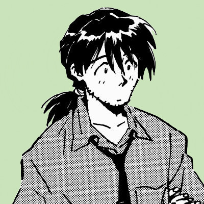

About me
Hi! I'm Dorian. I'm a Socialist from Ukraine. I use He/Him pronouns.

Fun Facts
- I Speak English, Russian and Ukrainian.
- I'm in college studying Political Science!
- I love entomology, etymology, sociology, philosphy, existentialism, absurdism, post-modernism, and political science. =)
interests
Films: Requiem for a Dream, The Man who Sleeps, Taxi Driver, Happy Together, The French Dispatch, Dead Poet's Society, Asteroid City, Maurice
Literature: The Picture of Dorian Gray (Wilde), The Myth Of Sisyphus (Camus), Wilde's poetry, Yesenin's Poetry, White Nights, (Dosteovsky) No Exit (Sartre)
Video Games: Disco Elysium, Outer Wilds, Baldur's Gate 3, Night in the Woods, Divinity Original Sin 2, Elden Ring, Valheim
Music: Will Wood, Hozier, Molchat Doma, Harley Poe, Dead Kennedys